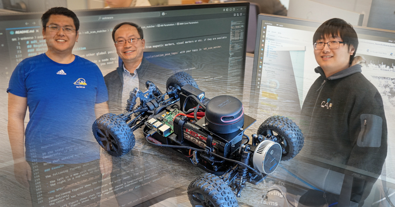

Timing-aware runtimes
SIM replaces copy-heavy message passing with freshness-aware shared-memory exchange for ROS 2 and Autoware, reducing transport latency by up to 98% and shortening emergency-braking distance by 13.6 ft at 40 mph.
Ph.D. Candidate, Computer Science, University of Delaware
I design runtimes, operating-system services, programmable infrastructure, and digital twins that make autonomous mobility and cyber-physical systems measurable, programmable, and deployable.

Expected Ph.D. May 2026. Researcher in robotics, cyber-physical systems, autonomous mobility, and vehicle computing. My work connects fielded autonomous vehicles, roadside infrastructure, reproducible digital twins, and open-source autonomy ecosystems.
Research Program
SIM replaces copy-heavy message passing with freshness-aware shared-memory exchange for ROS 2 and Autoware, reducing transport latency by up to 98% and shortening emergency-braking distance by 13.6 ft at 40 mph.
OpenIntersection and IPI turn intelligent intersections into software-defined platforms with auditable V2X services, stable APIs, and sub-30 ms occlusion-aware advisory response in prototype deployments.
BlueICE and ICAT connect CARLA, SUMO, Autoware, hardware-in-the-loop, and testbed infrastructure so autonomy experiments can be reproduced as system artifacts rather than one-time demonstrations.
Research Platforms

Freshness-aware runtime and autonomous-vehicle operating-system work for production-ready Autoware pipelines.
Repository
Semantic VLM dataset and benchmark tooling for safe autonomous driving scene understanding.
RepositoryCommunications fabric and reference implementation linking intelligent intersections with connected vehicles, CAVs, pedestrians, peer intersections, and cloud services.
RepositoryAutoware, CARLA, V2X, and vehicle-computing integrations supporting research platforms and open-source autonomy work.
RepositoryPublications
W. Shi, Y. He. Springer, 2025. ISBN 3031994841.
Y. He, W. Shi. IEEE Computer, 57(12):58-68, 2024. DOI: 10.1109/MC.2024.3421963.
Y. He, B. Wu, Z. Dong, J. Wan, J. Zhang, W. Shi. IEEE Transactions on Vehicular Technology, 72(12):15450-15462, 2023.
Y. He, W. Shi. To appear in IEEE Intelligent Vehicles Symposium, 2026.
Y. He, H. Chen, I. Safro, W. Shi. To appear in IEEE Intelligent Vehicles Symposium, 2026.
Y. He, Y. Wang, B. Tian, W. Shi. To appear in Physical Intelligence: Systems and Applications Workshop, 2026.
Y. Wang, Y. He, R. Wang, W. Shi. ACM HotStorage, 2024.
Z. Tian, Y. He, B. Tian, R. Zhong, E. Foorginejad, W. Shi. IEEE MOST, 2024.
B. Wu*, Y. He*, Z. Dong, J. Wan, J. Zhang, W. Shi. IEEE ICDCS, 2022. *Equal contribution.
Talks, Visitors, and Community
Invited talk, Digital Twins for Intelligent Vehicles: From Agent-Level to System-Level Twins, IEEE Intelligent Vehicles Symposium.
Invited talk, UCI CADRI Workshop, University of California, Irvine.
Invited talk, College of William & Mary.
API Workgroup Lead; Technical Steering Committee Member; Strategic Planning Committee Member.

UDaily featured the Autonomous Driving Academy with William He, Weisong Shi, and Ren Zhong working with a sensor-equipped model autonomous vehicle. The program connects high school students with robotics, autonomy software, and hands-on systems work.
UDaily storyTeaching
Awards and Service
Contact
I am interested in research collaborations across physical intelligence, robotics systems, V2X and infrastructure, autonomous mobility, digital twins, and reproducible cyber-physical systems.